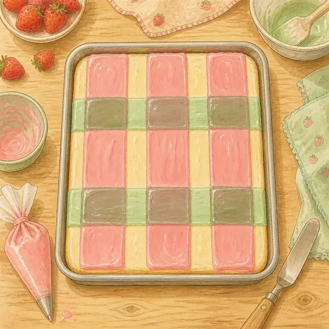
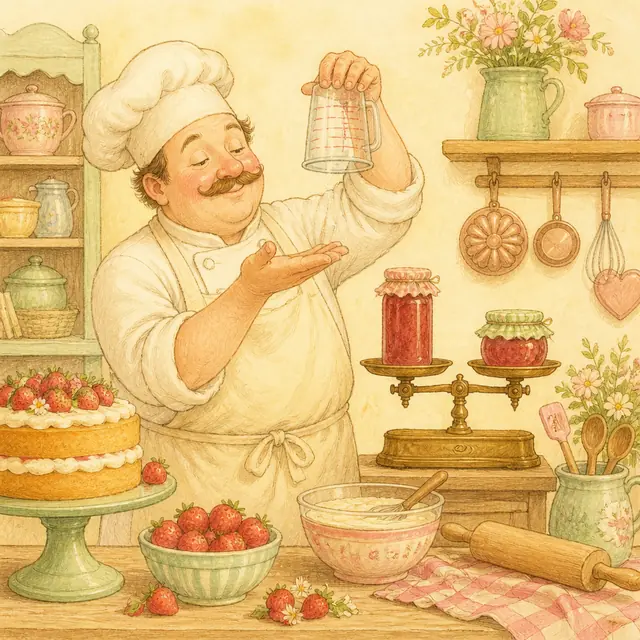

課前暖身漫畫：烘焙教室裡的兩種答案
小妍和小翊在算同一張配方單上的分量：\( \frac{7}{2} - \frac{4}{5} \div [ ( -\frac{8}{5} ) + \frac{7}{5} ] \)。一個算出 \( \frac{113}{30} \)，一個算出 \( \frac{24}{7} \)，兩個人都很有把握，答案卻不一樣。錯的地方都在「括號」——一個把除法也拿去用分配律拆開，一個是括號裡的分數加錯了。這一節就從最簡分數開始，一路把加、減、乘、除的規則補齊，最後回來算出這題的正解 \( \frac{15}{2} \)。
重點 1：最簡分數與等值分數——切得再細，還是同一塊
重點整理與敘述
- 負分數的三種寫法：分數線本來就是除法，所以負號放在分子、分母或整個分數前面，值都一樣。設 \(a\)、\(b\) 為正整數，則 \[ \frac{-b}{a} = \frac{b}{-a} = -\frac{b}{a} \] 例如 \((-7) \div 4 = -( 7 \div 4 )\)，所以 \(\frac{-7}{4} = -\frac{7}{4}\)；\(7 \div (-4) = -( 7 \div 4 )\)，所以 \(\frac{7}{-4} = -\frac{7}{4}\)。習慣上把負號寫在分數前面。
- 擴分：分子與分母同乘一個不為 \(0\) 的整數。例如 \(-\frac{3}{4} = \frac{-3 \times 2}{4 \times 2} = -\frac{6}{8}\)。
- 約分：分子與分母同除以它們的公因數。例如 \(\frac{45}{60} = \frac{45 \div 15}{60 \div 15} = \frac{3}{4}\)。
- 等值分數：擴分或約分後的分數，值與原分數相等，這些分數彼此稱為等值分數。格子變多變少，塗色的那一塊大小沒變。
- 最簡分數：分子與分母互質（最大公因數為 \(1\)）的分數。例如 \(\frac{3}{4}\) 中 \(( 3 , 4 ) = 1\)，所以 \(\frac{3}{4}\) 是最簡分數。
- 一次化到最簡：分子與分母同除以它們的最大公因數，一步就到位；除完之後兩者的公因數只剩 \(1\)，再也約不動了。
- 負分數也一樣化簡：先把負號提到分數前面，再約分子與分母。例如 \(\frac{16}{-81} = -\frac{16}{81}\)，而 \(( 16 , 81 ) = 1\)，所以它已經是最簡分數。
- 帶分數要先化假分數：做乘除運算前，先把 \(4\frac{1}{3}\) 寫成 \(\frac{13}{3}\)，\(-2\frac{3}{4}\) 寫成 \(-\frac{11}{4}\)。
- 常見錯誤：約分只能同乘同除，不可以「同加同減」。\(\frac{3}{4}\) 的分子分母同加 \(1\) 會變成 \(\frac{4}{5}\)，兩者並不相等。
| 原分數 | \(\text{(分子, 分母)}\) | 最簡分數 | 本來就最簡？ |
|---|---|---|---|
| \(\frac{45}{60}\) | \(15\) | \(\frac{3}{4}\) | 否 |
| \(-\frac{36}{96}\) | \(12\) | \(-\frac{3}{8}\) | 否 |
| \(\frac{16}{-81}\) | \(1\) | \(-\frac{16}{81}\) | 是（只需搬負號） |
| \(-\frac{21}{9}\) | \(3\) | \(-\frac{7}{3}\) | 否 |
視覺互動探索：等值分數縮放器
調整分數與倍率，看看擴分、約分之後塗色的長度有沒有變，最下面一條是化到最簡的樣子：
形成性評量 (最簡分數與等值分數)
Q1. 下列哪一個分數已經是最簡分數？
解析：最簡分數的判斷條件只有一個——分子與分母互質。
A：\(26 = 2 \times 13\)、\(39 = 3 \times 13\)，\(( 26 , 39 ) = 13\)，可約成 \(\frac{2}{3}\)。
C：\(( 18 , 24 ) = 6\)，可約成 \(-\frac{3}{4}\)。
D：\(34 = 2 \times 17\)、\(51 = 3 \times 17\)，\(( 34 , 51 ) = 17\)，可約成 \(\frac{2}{3}\)。
B：\(15 = 3 \times 5\)、\(28 = 2^2 \times 7\)，沒有共同的質因數，\(( 15 , 28 ) = 1\)，所以 \(\frac{15}{28}\) 是最簡分數，答案為 B。
Q2. 如果 \(\frac{5}{8}\) 的分母加上 \(24\)，那麼分子要加上多少，分數的值才不會改變？
解析：值不變＝擴分，所以分子分母要同乘同一個倍數，不是同加同一個數。
新分母 \(= 8 + 24 = 32\)，而 \(32 \div 8 = 4\)，所以是擴分 \(4\) 倍。
新分子 \(= 5 \times 4 = 20\)，也就是分子要加上 \(20 - 5 = 15\)，答案為 C。
驗算：\(\frac{5 + 15}{8 + 24} = \frac{20}{32} = \frac{5}{8}\)，確實相等。
選 D 的人是把「分母加 \(24\)」直接搬到分子——那會變成 \(\frac{29}{32} \neq \frac{5}{8}\)。
重點 2：分數的比較大小——先切成一樣的份數再比
重點整理與敘述
- 通分：把幾個分數化成同分母的過程。分母取原本各分母的最小公倍數 \([ b_1 , b_2 ]\)（就是 2-2 學過的那個）。
- 同分母比分子：分母相同時，分子愈大的正分數愈大。
- 同分子比分母：分子相同時，分母愈大的正分數反而愈小（同樣一塊蛋糕，切愈多份每份愈小）。
- 範例（通分）：比較 \(\frac{2}{3}\)、\(\frac{3}{4}\)、\(\frac{5}{6}\)。
\([ 3 , 4 , 6 ] = 12\)，通分得 \(\frac{8}{12}\)、\(\frac{9}{12}\)、\(\frac{10}{12}\)，
所以 \(\frac{2}{3} < \frac{3}{4} < \frac{5}{6}\)。 - 範例（同分子）：比較 \(\frac{2}{7}\)、\(\frac{3}{13}\)、\(\frac{5}{23}\)。
\([ 2 , 3 , 5 ] = 30\)，把分子都化成 \(30\)：\(\frac{30}{105}\)、\(\frac{30}{130}\)、\(\frac{30}{138}\)，
分母愈大愈小，所以 \(\frac{2}{7} > \frac{3}{13} > \frac{5}{23}\)。 - 負分數：絕對值愈大，值愈小。跟整數一樣——先比絕對值，再把不等號反過來。
- 範例（負分數）：比較 \(-\frac{2}{3}\) 與 \(-\frac{3}{5}\)。
\(\left| -\frac{2}{3} \right| = \frac{10}{15}\)、\(\left| -\frac{3}{5} \right| = \frac{9}{15}\)，
因為 \(\frac{10}{15} > \frac{9}{15}\)，所以 \(-\frac{2}{3} < -\frac{3}{5}\)。 - 負帶分數：\(-1\frac{1}{2}\)、\(-1\frac{2}{3}\)、\(-1\frac{3}{4}\) 的絕對值分別是 \(1\frac{6}{12}\)、\(1\frac{8}{12}\)、\(1\frac{9}{12}\)，所以 \(-1\frac{1}{2} > -1\frac{2}{3} > -1\frac{3}{4}\)。整數部分相同時，只要比分數部分。
- 正負一起比：不必通分——負分數一定小於 \(0\)，\(0\) 一定小於正分數。
| 情況 | 怎麼比 | 例子 |
|---|---|---|
| 同分母 | 分子大的大 | \(\frac{8}{12} < \frac{9}{12}\) |
| 同分子（正） | 分母大的小 | \(\frac{5}{11} > \frac{5}{13}\) |
| 都是負分數 | 絕對值大的小 | \(-\frac{2}{3} < -\frac{3}{5}\) |
| 一正一負 | 負的直接比較小 | \(-\frac{1}{9} < \frac{1}{100}\) |
視覺互動探索：通分比大小台
兩個分數會自動通分成同分母，並標在數線上，看看誰在右邊誰就大；把分子調成負的試試看：
形成性評量 (分數的比較大小)
Q1. 將 \(-\frac{5}{8}\)、\(-\frac{7}{12}\)、\(-\frac{2}{3}\) 由小到大排列，下列何者正確？
解析：三個都是負分數，先比絕對值，再把結果反過來。
\([ 8 , 12 , 3 ] = 24\)，通分絕對值：\(\frac{5}{8} = \frac{15}{24}\)、\(\frac{7}{12} = \frac{14}{24}\)、\(\frac{2}{3} = \frac{16}{24}\)。
絕對值由大到小為 \(\frac{16}{24} > \frac{15}{24} > \frac{14}{24}\)，也就是 \(\left| -\frac{2}{3} \right| > \left| -\frac{5}{8} \right| > \left| -\frac{7}{12} \right|\)。
絕對值愈大的負數愈小，所以 \(-\frac{2}{3} < -\frac{5}{8} < -\frac{7}{12}\)，答案為 D。
Q2. 將 \(\frac{5}{11}\)、\(\frac{5}{12}\)、\(\frac{5}{13}\) 由大到小排列，下列何者正確？
解析：三個分數的分子都是 \(5\)，不必通分，直接用「同分子比分母」。
同樣要分 \(5\) 份出來，蛋糕切成 \(11\) 份時每份最大，切成 \(13\) 份時每份最小。
所以分母愈小的正分數愈大：\(\frac{5}{11} > \frac{5}{12} > \frac{5}{13}\)，答案為 A。
不放心可以通分驗算：\([ 11 , 12 , 13 ] = 1716\)，得 \(\frac{780}{1716} > \frac{715}{1716} > \frac{660}{1716}\)，結論相同。
重點 3：分數的加減——分母先對齊，分子才能算
重點整理與敘述
- 同分母：分母不變，分子直接加減。 \[ \begin{aligned} & \frac{-7}{5} + \frac{-9}{5} \\ &= \frac{(-7) + (-9)}{5} = -\frac{16}{5} \end{aligned} \]
- 異分母：先通分（分母取最小公倍數），再加減分子。 \[ \begin{aligned} & ( -\frac{5}{6} ) - \frac{11}{8} \\ &= -\frac{20}{24} - \frac{33}{24} = -\frac{53}{24} \end{aligned} \] （這裡 \([ 6 , 8 ] = 24\)）
- 減負數就是加正數： \[ \begin{aligned} & ( -\frac{7}{8} ) - ( -\frac{3}{8} ) \\ &= -\frac{7}{8} + \frac{3}{8} \\ &= -\frac{4}{8} = -\frac{1}{2} \end{aligned} \]
- 去括號規則（跟第 1 章整數完全一樣）： \[ \begin{aligned} & -( a + b ) = -a - b \\ & -( a - b ) = -a + b \end{aligned} \] 括號前面是減號時，括號裡每一項都要變號。
- 交換律與結合律： \[ \begin{aligned} & a + b = b + a \\ & a + b + c \\ &= ( a + b ) + c = a + ( b + c ) \end{aligned} \] 把同分母的先湊在一起算，可以少通分一次。
- 範例（先湊同分母）： \[ \begin{aligned} & ( -\frac{28}{29} ) - ( -\frac{32}{31} + \frac{1}{29} ) \\ &= -\frac{28}{29} - \frac{1}{29} + \frac{32}{31} \\ &= -1 + \frac{32}{31} = \frac{1}{31} \end{aligned} \] 如果硬把 \(29\) 和 \(31\) 通分成 \(899\)，計算量會大很多。
- 帶分數的加減兩種做法：計算 \(( -2\frac{3}{4} ) + 1\frac{2}{7}\)
- 〈解法一〉全化假分數： \[ \begin{aligned} & -\frac{11}{4} + \frac{9}{7} \\ &= \frac{-77 + 36}{28} = -\frac{41}{28} \end{aligned} \]
- 〈解法二〉整數、分數分開算： \[ \begin{aligned} & ( -2 + 1 ) + ( -\frac{3}{4} + \frac{2}{7} ) \\ &= -1 - \frac{13}{28} = -1\frac{13}{28} \end{aligned} \]
- 負帶分數拆開要小心：\(-7\frac{2}{3} = -( 7 + \frac{2}{3} ) = -7 - \frac{2}{3}\)，不是 \(-7 + \frac{2}{3}\)。
- 算完記得約分：答案一律化成最簡分數（假分數或帶分數都可以）。
| 步驟 | 做什麼 | 示範 |
|---|---|---|
| 1 | 去括號 | \(\frac{2}{3} - ( -\frac{3}{4} ) + ( -\frac{1}{6} ) = \frac{2}{3} + \frac{3}{4} - \frac{1}{6}\) |
| 2 | 通分 | \([ 3 , 4 , 6 ] = 12 \Rightarrow \frac{8}{12} + \frac{9}{12} - \frac{2}{12}\) |
| 3 | 算分子 | \(\frac{8 + 9 - 2}{12} = \frac{15}{12}\) |
| 4 | 約分 | \(\frac{15}{12} = \frac{5}{4} = 1\frac{1}{4}\) |
視覺互動探索：通分拼接器
兩個分數會先各自切成 \(b_1\)、\(b_2\) 格，通分後切成一樣細的格子再拼起來（往右是正、往左是負）：
形成性評量 (分數的加減)
Q1. 計算 \(( -\frac{7}{10} ) - ( -\frac{3}{4} )\) 的值。
解析：先把「減負數」改成「加正數」：\(( -\frac{7}{10} ) - ( -\frac{3}{4} ) = -\frac{7}{10} + \frac{3}{4}\)。
通分，\([ 10 , 4 ] = 20\)：\(-\frac{14}{20} + \frac{15}{20} = \frac{-14 + 15}{20} = \frac{1}{20}\)，答案為 B。
選 C 的人是忘了把括號前的負號作用在負分數上，變成 \(-\frac{14}{20} - \frac{15}{20}\)。減去一個負數等於加上它的相反數。
Q2. 計算 \(\frac{3}{8} + ( -\frac{5}{6} - \frac{1}{8} )\) 的值。
解析：括號前面是加號，去括號時裡面的符號都不變：
\(\frac{3}{8} + ( -\frac{5}{6} - \frac{1}{8} ) = \frac{3}{8} - \frac{5}{6} - \frac{1}{8}\)。
用交換律先把同分母的兩項湊在一起：\(( \frac{3}{8} - \frac{1}{8} ) - \frac{5}{6} = \frac{2}{8} - \frac{5}{6} = \frac{1}{4} - \frac{5}{6}\)。
通分，\([ 4 , 6 ] = 12\)：\(\frac{3}{12} - \frac{10}{12} = -\frac{7}{12}\)，答案為 C。
若一開始就把 \(8\)、\(6\)、\(8\) 全部通分成 \(24\) 也做得出來，只是數字大得多——先湊同分母是省力的關鍵。
重點 4：分數的乘法——分子乘分子，分母乘分母
重點整理與敘述
- 基本規則：分子相乘當新分子，分母相乘當新分母，不用通分。 \[ \frac{b}{a} \times \frac{d}{c} = \frac{b \times d}{a \times c} \] 例如 \(\frac{9}{5} \times \frac{4}{7} = \frac{36}{35}\)。
- 帶分數先化假分數：\(\frac{1}{3} \times 2\frac{1}{2} = \frac{1}{3} \times \frac{5}{2} = \frac{5}{6}\)。千萬不要整數乘整數、分數乘分數。
- 符號規則（跟整數一樣）：
- 同號兩分數相乘，結果為正。
- 異號兩分數相乘，結果為負。
- 先約分再乘：跟先乘再約分結果一樣，但先約分數字小很多。 \[ \begin{aligned} & ( -\frac{3}{7} ) \times ( -\frac{14}{15} ) \\ &= +( \frac{3}{7} \times \frac{14}{15} ) = \frac{2}{5} \end{aligned} \] （\(3\) 與 \(15\) 約掉 \(3\)、\(14\) 與 \(7\) 約掉 \(7\)）
- 交叉約分：可以拿任一個分子和任一個分母約，不必是同一個分數裡的。
- 連乘看負號個數：
- 偶數個負數相乘 \(\Rightarrow\) 乘積為正。
- 奇數個負數相乘 \(\Rightarrow\) 乘積為負。
- 乘法交換律與結合律： \[ \begin{aligned} & a \times b = b \times a \\ & a \times b \times c \\ &= ( a \times b ) \times c = a \times ( b \times c ) \end{aligned} \] 連乘時可以挑好約的先乘。
- 乘出來不一定變大：乘以一個小於 \(1\) 的正分數會讓結果變小，例如 \(6 \times \frac{1}{3} = 2\)。這跟整數乘法的直覺不同。
| 算式 | 先判符號 | 再算絕對值 | 結果 |
|---|---|---|---|
| \(( -\frac{3}{2} ) \times \frac{1}{4}\) | 異號 \(\Rightarrow\) 負 | \(\frac{3}{2} \times \frac{1}{4} = \frac{3}{8}\) | \(-\frac{3}{8}\) |
| \(( -\frac{3}{7} ) \times ( -\frac{14}{15} )\) | 同號 \(\Rightarrow\) 正 | \(\frac{3}{7} \times \frac{14}{15} = \frac{2}{5}\) | \(\frac{2}{5}\) |
| \(( -2\frac{1}{3} ) \times ( -\frac{5}{21} ) \times ( -1\frac{1}{5} )\) | 3 個負 \(\Rightarrow\) 負 | \(\frac{7}{3} \times \frac{5}{21} \times \frac{6}{5} = \frac{2}{3}\) | \(-\frac{2}{3}\) |

視覺互動探索：面積乘法器
把整塊烤盤看成 \(1\)，粉紅直條是第一個分數、薄荷橫條是第二個分數，交疊的格子就是乘積：
形成性評量 (分數的乘法)
Q1. 計算 \(( -\frac{8}{15} ) \times ( -\frac{25}{12} )\) 的值。
解析：兩個都是負分數，同號相乘得正，先把符號決定好：
\(( -\frac{8}{15} ) \times ( -\frac{25}{12} ) = +( \frac{8}{15} \times \frac{25}{12} )\)。
交叉約分：\(8\) 與 \(12\) 同除以 \(4\) 得 \(2\) 與 \(3\)；\(25\) 與 \(15\) 同除以 \(5\) 得 \(5\) 與 \(3\)。
所以原式 \(= \frac{2 \times 5}{3 \times 3} = \frac{10}{9}\)，答案為 A。
選 B 的人是把符號規則記反了——負負得正。
Q2. 計算 \(( -\frac{3}{4} ) \times ( -\frac{8}{9} ) \times ( -\frac{3}{2} )\) 的值。
解析：連乘先數負號：這裡有 3 個負號（奇數個），所以乘積為負。
再算絕對值：\(\frac{3}{4} \times \frac{8}{9} \times \frac{3}{2}\)。
\(3\) 與 \(9\) 約成 \(1\) 與 \(3\)；\(8\) 與 \(4\) 約成 \(2\) 與 \(1\)：得 \(\frac{1 \times 2}{1 \times 3} \times \frac{3}{2} = \frac{2}{3} \times \frac{3}{2} = 1\)。
補上負號，原式 \(= -1\)，答案為 D。
先數負號再算絕對值，可以完全避開「一路追著負號跑」的計算錯誤。
重點 5：倒數與分數的除法——把除數翻過來再相乘
重點整理與敘述
- 倒數的定義：把分數 \(\frac{b}{a}\)（\(a\)、\(b\) 皆不為 \(0\)）的分子與分母對調，得到的 \(\frac{a}{b}\) 就是它的倒數，兩數互為倒數。
- 核心性質：互為倒數的兩數相乘等於 \(1\)。 \[ \frac{b}{a} \times \frac{a}{b} = 1 \]
- 負數的倒數還是負數：\(-\frac{7}{2}\) 的倒數為 \(\frac{2}{-7} = -\frac{2}{7}\)。負號不會因為翻轉而消失。
- 整數的倒數：先寫成分母為 \(1\) 的分數。\(-2 = -\frac{2}{1}\)，倒數為 \(-\frac{1}{2}\)。
- 帶分數先化假分數：\(4\frac{1}{3} = \frac{13}{3}\)，所以倒數是 \(\frac{3}{13}\)，不是 \(4\frac{3}{1}\)。
- 兩個特例：\(1\) 的倒數是 \(1\)、\(-1\) 的倒數是 \(-1\)；而\(0\) 沒有倒數（分母不能為 \(0\)）。
- 除法規則：除以一個不為 \(0\) 的分數，等於乘以這個分數的倒數。 \[ \begin{aligned} & \frac{3}{5} \div 2\frac{1}{2} = \frac{3}{5} \div \frac{5}{2} \\ &= \frac{3}{5} \times \frac{2}{5} = \frac{6}{25} \end{aligned} \]
- 符號規則（跟乘法一樣）：同號兩分數相除結果為正，異號相除結果為負。
- 連除要一個一個翻： \[ \begin{aligned} & ( -\frac{9}{8} ) \div ( -\frac{3}{4} ) \div \frac{1}{3} \\ &= \frac{9}{8} \times \frac{4}{3} \times \frac{3}{1} = \frac{9}{2} \end{aligned} \] 只有除號後面的分數要翻，被除數不動。
| 原數 | 先化成 | 倒數 | 驗算 |
|---|---|---|---|
| \(3\frac{2}{5}\) | \(\frac{17}{5}\) | \(\frac{5}{17}\) | \(\frac{17}{5} \times \frac{5}{17} = 1\) |
| \(-\frac{4}{7}\) | \(-\frac{4}{7}\) | \(-\frac{7}{4}\) | \(( -\frac{4}{7} ) \times ( -\frac{7}{4} ) = 1\) |
| \(-1\) | \(-\frac{1}{1}\) | \(-1\) | \(( -1 ) \times ( -1 ) = 1\) |
| \(0\) | — | 沒有倒數 | 分母不能為 \(0\) |

視覺互動探索：倒數翻轉機
下面的除數卡會翻面變成它的倒數，除法就變成乘法；右邊隨時驗證兩數相乘是否為 \(1\)：
形成性評量 (倒數與分數的除法)
Q1. \(-2\frac{1}{4}\) 的倒數是下列哪一個？
解析：帶分數一定要先化成假分數才能取倒數。
\(-2\frac{1}{4} = -\frac{2 \times 4 + 1}{4} = -\frac{9}{4}\)。
分子分母對調，得倒數 \(-\frac{4}{9}\)，答案為 B。
驗算：\(( -\frac{9}{4} ) \times ( -\frac{4}{9} ) = 1\)，符合「互為倒數的兩數相乘為 \(1\)」。
選 D 的人是直接把帶分數的分子分母對調——那樣算出來乘積不是 \(1\)。選 C 的人是把原數抄成倒數了。
Q2. 計算 \(( -\frac{5}{6} ) \div ( -\frac{10}{9} ) \div \frac{3}{4}\) 的值。
解析：先看符號：負號有 2 個（偶數個），所以結果為正。
再把每一個除號後面的分數翻成倒數：
\(\frac{5}{6} \div \frac{10}{9} \div \frac{3}{4} = \frac{5}{6} \times \frac{9}{10} \times \frac{4}{3}\)。
約分：\(5\) 與 \(10\) 約成 \(1\) 與 \(2\)；\(9\) 與 \(6\) 約成 \(3\) 與 \(2\)；再與 \(\frac{4}{3}\) 相乘，\(4\) 與 \(4\) 約掉、\(3\) 與 \(3\) 約掉。
得 \(\frac{1 \times 3}{2 \times 2} \times \frac{4}{3} = \frac{3}{4} \times \frac{4}{3} = 1\)，答案為 C。
選 B 的人是只翻了第一個除數，把最後一步的 \(\div \frac{3}{4}\) 當成乘法算了。
重點 6：數的四則運算與應用——順序對了，分配律才好用
重點整理與敘述
- 運算順序（跟整數完全一樣）：
- ① 先算括號（小括號 → 中括號）。
- ② 再算乘除，同一級由左到右。
- ③ 最後算加減，同一級由左到右。
- 小數與分數混在一起時，統一化成分數：\(-0.6 = -\frac{6}{10} = -\frac{3}{5}\)、\(1.5 = \frac{3}{2}\)。分數比小數好約分。
- 範例（順序 + 化分數）： \[ \begin{aligned} & \frac{3}{2} \div ( -0.6 ) \times ( -\frac{3}{5} ) - \frac{1}{2} \\ &= \frac{3}{2} \times ( -\frac{5}{3} ) \times ( -\frac{3}{5} ) - \frac{1}{2} \\ &= \frac{3}{2} - \frac{1}{2} = 1 \end{aligned} \] 注意 \(\div\) 和 \(\times\) 同一級，必須由左到右，不可以先算後面的乘法。
- 乘法對加減的分配律： \[ \begin{aligned} & a \times b + a \times c = a \times ( b + c ) \\ & a \times b - a \times c = a \times ( b - c ) \end{aligned} \] 看到相同的因數就把它提出來，可以少算很多。
- 範例（提公因數）： \[ \begin{aligned} & 3\frac{9}{11} \times ( -57 ) - 1\frac{9}{11} \times ( -57 ) \\ &= ( 3\frac{9}{11} - 1\frac{9}{11} ) \times ( -57 ) \\ &= 2 \times ( -57 ) = -114 \end{aligned} \]
- 除法沒有分配律（漫畫裡小翊踩到的坑）： \[ a \div ( b + c ) \neq a \div b + a \div c \] 括號在除號後面時，一定要先把括號裡算完，再拿去除。
- 範例（無人機）：滿載 \(45\) 公斤，飛 \(50\) 分鐘可噴完；飛 \(20\) 分鐘後機加藥重 \(37\) 公斤，求機身重。
用掉 \(45 - 37 = 8\) 公斤，占滿載的 \(\frac{20}{50} = \frac{2}{5}\)，
滿載農藥 \(= 8 \div \frac{2}{5} = 20\) 公斤，故機身 \(= 45 - 20 = 25\) 公斤。
| 寫法 | 正確嗎 | 原因 |
|---|---|---|
| \(\frac{4}{5} \times ( \frac{1}{2} + \frac{1}{3} ) = \frac{4}{5} \times \frac{1}{2} + \frac{4}{5} \times \frac{1}{3}\) | ✅ 正確 | 乘法對加法有分配律 |
| \(\frac{4}{5} \div ( \frac{1}{2} + \frac{1}{3} ) = \frac{4}{5} \div \frac{1}{2} + \frac{4}{5} \div \frac{1}{3}\) | ❌ 錯誤 | 除法沒有分配律，括號要先算 |
| \(\frac{3}{2} \div \frac{3}{5} \times \frac{3}{5} = \frac{3}{2} \div ( \frac{3}{5} \times \frac{3}{5} )\) | ❌ 錯誤 | 乘除同級要由左到右 |
視覺互動探索：分配律拼圖與情境模擬器
切換下面四種模式：第一種看分配律怎麼把兩塊面積併成一塊，另外三種是課本的應用情境：
形成性評量 (四則運算與應用)
Q1. 計算 \(\frac{5}{3} \div ( -0.4 ) \times ( -\frac{2}{5} ) + \frac{1}{3}\) 的值。
解析：先把小數化成分數：\(-0.4 = -\frac{4}{10} = -\frac{2}{5}\)。
乘除由左到右，先算除法：\(\frac{5}{3} \div ( -\frac{2}{5} ) = \frac{5}{3} \times ( -\frac{5}{2} ) = -\frac{25}{6}\)。
再乘：\(( -\frac{25}{6} ) \times ( -\frac{2}{5} ) = +\frac{25 \times 2}{6 \times 5} = \frac{5}{3}\)。
最後做加法：\(\frac{5}{3} + \frac{1}{3} = \frac{6}{3} = 2\)，答案為 A。
如果先把後面的 \(( -\frac{2}{5} ) \times\) 併進去算，就違反了「乘除同級由左到右」，會得到錯誤答案。
Q2. 計算 \(4\frac{2}{7} \times ( -63 ) - 1\frac{2}{7} \times ( -63 )\) 的值。
解析：兩項都乘以 \(( -63 )\)，這是相同的因數，用分配律提出來：
\[\begin{aligned}
& 4\frac{2}{7} \times ( -63 ) - 1\frac{2}{7} \times ( -63 ) \\
&= \left( 4\frac{2}{7} - 1\frac{2}{7} \right) \times ( -63 )
\end{aligned}\]
括號內的分數部分剛好抵消：\(4\frac{2}{7} - 1\frac{2}{7} = 3\)。
所以原式 \(= 3 \times ( -63 ) = -189\)，答案為 D。
硬算也可以（\(\frac{30}{7} \times ( -63 ) = -270\)、\(\frac{9}{7} \times ( -63 ) = -81\)，\(-270 - ( -81 ) = -189\)），但分配律讓兩個大數乘法變成一個小數乘法。
2-3 分數的四則運算 課程核心回顧
分數運算快速檢索卡
- 負分數三寫法：\(\frac{-b}{a} = \frac{b}{-a} = -\frac{b}{a}\)，習慣把負號寫在最前面。
- 最簡分數：分子分母互質。化最簡＝同除以最大公因數；只能同乘同除，不能同加同減。
- 比大小：正分數同分母比分子（大的大）、正分數同分子比分母（大的小）、都是負的比絕對值（大的反而小）。
- 加減：先去括號 \(\to\) 通分（分母取 \([ b_1 , b_2 ]\)）\(\to\) 算分子 \(\to\) 約分。
- 去括號：\(-( a + b ) = -a - b\)、\(-( a - b ) = -a + b\)；負帶分數 \(-7\frac{2}{3} = -7 - \frac{2}{3}\)。
- 乘法：分子乘分子、分母乘分母，不通分；帶分數先化假分數；先約分再乘。
- 符號：同號得正、異號得負；連乘連除數負號，偶正奇負。
- 倒數：分子分母對調，兩數相乘為 \(1\)；負數的倒數仍為負；\(0\) 沒有倒數。
- 除法：除以一個數＝乘以它的倒數；連除要每一個除數都翻。
- 四則順序：括號 \(\to\) 乘除 \(\to\) 加減，同級由左到右；小數先化成分數。
- 分配律：\(a \times b \pm a \times c = a \times ( b \pm c )\)。只對乘法成立，除法沒有分配律。
回到烘焙教室：那題的正解
兩個人錯在哪裡
漫畫裡那一題是 \( \frac{7}{2} - \frac{4}{5} \div [ ( -\frac{8}{5} ) + \frac{7}{5} ] \)。小翊把除法也拿去用分配律拆成 \(\frac{4}{5} \div ( -\frac{8}{5} ) - \frac{4}{5} \div \frac{7}{5}\)——除法沒有分配律，第一步就錯了。小妍記得要先算括號，卻把 \(( -\frac{8}{5} ) + \frac{7}{5}\) 算成 \(-\frac{15}{5}\)：分子算錯了，\(-8 + 7 = -1\)，不是 \(-15\)。
\( ( -\frac{8}{5} ) + \frac{7}{5} = \frac{-8 + 7}{5} = -\frac{1}{5} \)
括號算對了，後面就順了：\(\frac{4}{5} \div ( -\frac{1}{5} ) = \frac{4}{5} \times ( -5 ) = -4\)，所以
\( \frac{7}{2} - ( -4 ) = \frac{7}{2} + 4 = \frac{15}{2} \)
分數其實藏在節拍裡
音符的名字本身就是分數：全音符 \(1\) 拍、二分音符 \(\frac{1}{2}\) 拍、四分音符 \(\frac{1}{4}\) 拍、八分音符 \(\frac{1}{8}\) 拍。一個二分音符和兩個四分音符唱起來一樣長，因為 \(\frac{1}{2} = \frac{2}{4}\)——這就是等值分數：拆得比較細，總長度沒有變。
要把四分音符和八分音符加在一起，得先換成同一種音符才數得出來：\(\frac{1}{4} + \frac{1}{8} = \frac{2}{8} + \frac{1}{8} = \frac{3}{8}\)，這正是通分在做的事。而除以一個分數問的則是「這裡面裝得下幾份」——一個 \(4\) 拍的小節可以放幾個八分音符？\(4 \div \frac{1}{8} = 32\) 個。